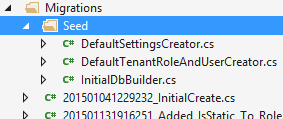

In this document, we will create a sample phonebook application based on ASP.NET Zero step by step. After all steps, we will have a multi-tenant, localized, authorized, configurable, testable... appliaction.
We're creating and downloading the solution named "Acme.PhoneBook" as described in Getting Started document. After opening solution in Visual Studio, we see an NLayered solution that consists of six projects:
Also, run database migrations, create the database and login to the application as described in getting started document. After all completed and logged in to the application, we see a dashboard as shown below:

We will make our application single-tenant (we will convert it to multi-tenant later). So, we open PhoneBookCoreModule class and disable multi-tenancy as shown below:
[DependsOn(typeof(AbpZeroCoreModule))]
public class PhoneBookCoreModule : AbpModule
{
public override void PreInitialize()
{
//Enable this line to create a multi-tenant application.
//Configuration.MultiTenancy.IsEnabled = true;
}
}
Let's begin from UI and create a new page named "Phone book".
AppNavProvider class defines menus in the application. When we change this class, menus are automatically changed. Open this class and create new menu item as shown below.
new MenuItemDefinition(
PageNames.App.Tenant.PhoneBook,
L("PhoneBook"),
url: "tenant.phonebook",
icon: "glyphicon glyphicon-book"
)
Every menu item must have a unique name to identify this menu item. Menu names are defined in PageNames class as constants. We add a new constant: "PhoneBook".
A menu item should also have a localizable shown name. It's used to display menu item on the page. L("People") is localized name of our new menu. L method is a helper method gets a localization key and simply returns a LocalizableString object (see AppNavigationProvider class).
Localization strings are defined in XML files in .Core project as shown below:

Open PhoneBook.xml (the default, English localization dictionary) ad add the following line:
<text name="PhoneBook" value="Phone book" />
If we don't define "PhoneBook"s value for other localization dictionaries, default value is shown in all languages. We can define it also for Turkish in PhoneBook-tr.xml file:
<text name="PhoneBook" value="Telefon rehberi" />
url can a a URL or AngularJs route (state in angular ui-router used in ASP.NET Zero) that will be activated when we click the menu item. We will define this route below.
Lastly, icon is the shown menu icon for new menu item. It can be a css class. We can use Glyphicon, Font-Awesome or another css font library here.
See navigation document for more information on menu definitions.
Angular routes are defined in app.js. We're adding a new route definition as shown below:
$stateProvider.state('tenant.phonebook', {
url: '/phonebook',
templateUrl: '~/App/tenant/views/phonebook/index.cshtml',
menu: 'PhoneBook'
});
'tenant.phonebook' is the unique name of this state (route). url is the mapped URL to this route. templateUrl is the view path for this route and menu is a reference to the menu item name defined before. Menu reference ensures highlighting related menu item on the main menu when we enter this page (activate the route).
The last step to see our new page is to create an Angularjs view and controller for it:

Creating an empty Controller file, index.js under App/tenant/views/phonebook folder:
(function() {
appModule.controller('tenant.views.phonebook.index', [
'$scope',
function ($scope) {
var vm = this;
$scope.$on('$viewContentLoaded', function () {
Metronic.initAjax();
});
//...
}
]);
})();
This is the minimum controller definition that creates a controller named 'tenant.views.phonebook.index' and triggers Metronic's init method for this page. Controller name is completely arbitrary. You can set any string. We use these naming as convention and it's adviced to follow this convention when developing applications based on ASP.NET Zero.
Creating an empty view, index.cshtml under App/tenant/views/phonebook folder:
<div ng-controller="tenant.views.phonebook.index as vm">
<div class="row margin-bottom-5">
<div class="col-xs-12">
<div class="page-head">
<div class="page-title">
<h1>
<span>@L("PhoneBook")</span>
</h1>
</div>
</div>
</div>
</div>
<div class="portlet light">
<div class="portlet-body">
<p>PHONE BOOK CONTENT COMES HERE!</p>
</div>
</div>
</div>
We can use .cshtml (razor) files as views (thanks to ABP framework). That makes easy localization, conditionally creating some part of the view (based on some user permissions for example) and so on. Don't confuse about all these html structure. You can copy it from another page and clear contents to prepare an empty view.
Now, it's time to run application and see the new phone book page:

Menu item display name and page title are localized. Try to change UI language to see difference.
We define a Person entity (mapped to PbPersons table in database) to represents a person in phone book:
[Table("PbPersons")]
public class Person : FullAuditedEntity
{
[Required]
[MaxLength(32)]
public virtual string Name { get; set; }
[Required]
[MaxLength(32)]
public virtual string Surname { get; set; }
public virtual string EmailAddress { get; set; }
}
Person's primary key type is int (as default). It inherits FullAuditedEntity that contains creation, modification and deletion audit properties. It's also soft-delete. When we delete a person, it's not deleted by database but marked as deteled. See entity and data filters documentations for more informations.
We add a DbSet property for Person entity to PhoneBookDbContext class defined in .EntityFramework project.
public class PhoneBookDbContext : AbpZeroDbContext<Tenant, Role, User>
{
public virtual IDbSet<Person> Persons { get; set; }
//...other entities
public PhoneBookDbContext()
: base("Default")
{
}
//...other codes
}
We use EntityFramework Code-First migrations to migrate database schema. Since we added Person entitiy, our DbContext model is changed. So, we should create a new migration to create needed table in the database.
After opening Package Manager Console and selecting .EntityFramework as default project, we write the following command:

This command will add a migration class named "Added_Persons_Table" as shown below:
public partial class Added_Persons_Table : DbMigration
{
public override void Up()
{
CreateTable(
"dbo.PbPersons",
c => new
{
Id = c.Int(nullable: false, identity: true),
Name = c.String(nullable: false, maxLength: 32),
Surname = c.String(nullable: false, maxLength: 32),
EmailAddress = c.String(),
IsDeleted = c.Boolean(nullable: false),
DeleterUserId = c.Long(),
DeletionTime = c.DateTime(),
LastModificationTime = c.DateTime(),
LastModifierUserId = c.Long(),
CreationTime = c.DateTime(nullable: false),
CreatorUserId = c.Long(),
},
annotations: new Dictionary<string, object>
{
{ "DynamicFilter_Person_SoftDelete", "EntityFramework.DynamicFilters.DynamicFilterDefinition" },
})
.PrimaryKey(t => t.Id);
}
public override void Down()
{
DropTable("dbo.PbPersons",
removedAnnotations: new Dictionary<string, object>
{
{ "DynamicFilter_Person_SoftDelete", "EntityFramework.DynamicFilters.DynamicFilterDefinition" },
});
}
}
We don't have to know so much about format and rules of this file. But, it's suggested to have a basic understanding of migrations. In the same Package Manager Console, we write "Update-Database" command in order to apply the new migration to database. After updating, we can see that PbPersons table is added to database.

But this new table is empty. We can use EntityFramework's Seed method to add some initial data to database. In ASP.NET Zero, there are some classes to fill initial data for users and settings:

So, we can add a seperated class to fill some people to database as shown below:
public class InitialPeopleCreator
{
private readonly PhoneBookDbContext _context;
public InitialPeopleAndPhoneCreator(PhoneBookDbContext context)
{
_context = context;
}
public void Create()
{
var douglas = _context.Persons.FirstOrDefault(p => p.EmailAddress == "douglas.adams@fortytwo.net");
if (douglas == null)
{
_context.Persons.Add(
new Person
{
Name = "Douglas",
Surname = "Adams",
EmailAddress = "douglas.adams@fortytwo.com"
});
}
var asimov = _context.Persons.FirstOrDefault(p => p.EmailAddress == "isaac.asimov@foundation.org");
if (asimov == null)
{
_context.Persons.Add(
new Person
{
Name = "Isaac",
Surname = "Asimov",
EmailAddress = "isaac.asimov@foundation.org"
});
}
}
}
These type of default data is good since we can also use these data in unit tests. Surely, we should be careful about seed data since this code will always be executed after each Update-Database command (See EntityFramework documentations to know more about seed data). This class is created and called in InitialDbBuilder class, and it's called from EntityFramework's Configuration class. This is not so important, just for a good code organization (see source codes).
We execute Update-Database command again. This command runs seed and it adds two people to PbPersons table:

An Application Service is used from client (presentation layer) to perform operations (use cases) in the application.
Application services are located in .Application project. We create first application service to get people from server. We're creating an interface to define the person application service:
public interface IPersonAppService : IApplicationService
{
ListResultOutput<PersonListDto> GetPeople(GetPeopleInput input);
}
An application service method gets/returns DTOs. ListResultOutput is a pre-build helper DTO to return a list of another DTO. GetPeopleInput is a DTO to pass request parameters to GetPeople method. So, GetPeopleIntput and PersonListDto are defined as shown below:
public class GetPeopleInput : IInputDto
{
public string Filter { get; set; }
}
[AutoMapFrom(typeof(Person))]
public class PersonListDto : FullAuditedEntityDto
{
public virtual string Name { get; set; }
public virtual string Surname { get; set; }
public virtual string EmailAddress { get; set; }
}
Implementing IInputDto interface is a convention in ABP for input DTOs. It provides automatic validation (as we will use later). AutoMapFrom is used to configure AutoMapper to create mapping from Person to PersonListDto. FullAuditedEntityDto used to inherit audit properties automatically. See application service and DTO documentations for more informations.
After defining interface, we can implement it as shown below:
public class PersonAppService : PhoneBookAppServiceBase, IPersonAppService
{
private readonly IRepository<Person> _personRepository;
public PersonAppService(IRepository<Person> personRepository)
{
_personRepository = personRepository;
}
public ListResultOutput<PersonListDto> GetPeople(GetPeopleInput input)
{
var persons = _personRepository
.GetAll()
.WhereIf(
!input.Filter.IsNullOrEmpty(),
p => p.Name.Contains(input.Filter) ||
p.Surname.Contains(input.Filter) ||
p.EmailAddress.Contains(input.Filter)
)
.OrderBy(p => p.Name)
.ThenBy(p => p.Surname)
.ToList();
return new ListResultOutput<PersonListDto>(persons.MapTo<List<PersonListDto>>());
}
}
We're injecting person repository (it's automatically created by ABP) and using it to filter and get peoples from database. WhereIf is an extension method here. It performs Where only if filter is not null or empty (ABP has similar shortcut extension methods). MapTo method automatically converts list of Person entities to list of PersonListDto entities using AutoMapper library.
You can skip this section if you don't interest in automated testing.
By writing unit test, we can test PersonAppService.GetPeople method without creating a user interface that calls it and shows people on the screen.
We write unit test in .Tests project in the solution. Let's create first test to verify getting people without any filter:
public class PeopleAppService_Tests : AppTestBase
{
private readonly IPersonAppService _personAppService;
public PeopleAppService_Tests()
{
_personAppService = Resolve<IPersonAppService>();
}
[Fact]
public void Should_Get_All_People_Without_Any_Filter()
{
//Act
var persons = _personAppService.GetPeople(new GetPeopleInput());
//Assert
persons.Items.Count.ShouldBe(2);
}
}
We derived test class from AppTestBase. AppTestBase class initializes all system, creates an in-memory fake database, seeds initial data (that we created before) to database and logins to system as admin. So, this is actually an integration test since it tests all server-side codes from entitiy framework mapping to application services, validation and authorization.
In constructor, we get (resolve) an IPersonAppService from dependency injection container. So, it creates the PersonAppService class with all dependencies. Then we can use it in test methods.
Since we're using xUnit, we add Fact attribute to each test method. In the test method, we called GetPeople method and checked if there are two people in the returned list as we know that there were 2 people in initial database.
Let's run the all unit tests in Test Explorer and see if it works:

As you see, it worked successfully. Now, we know that PersonAppService works properly without any filter. Let's add a new unit test to get filtered people:
[Fact]
public void Should_Get_People_With_Filter()
{
//Act
var persons = _personAppService.GetPeople(
new GetPeopleInput
{
Filter = "adams"
});
//Assert
persons.Items.Count.ShouldBe(1);
persons.Items[0].Name.ShouldBe("Douglas");
persons.Items[0].Surname.ShouldBe("Adams");
}
Again, since we know initial database, we can check returned results easily. Here, initial test data is important. When we change initial data, our test may fail even if our services are correct. So, it's better to write unit tests independed of initial data as much as possible. We could check incoming data to see if every people contains "adams" in his/her name, surname or email. Thus, if we add new people to initial data, our tests remain working.
There are many techniques on unit testing, I kept it simple here. But ASP.NET Zero template makes very easy to write unit and integration tests by base classes and pre-build test codes.
TODO: THIS DOCUMENT IS NOT COMPLETED YET!